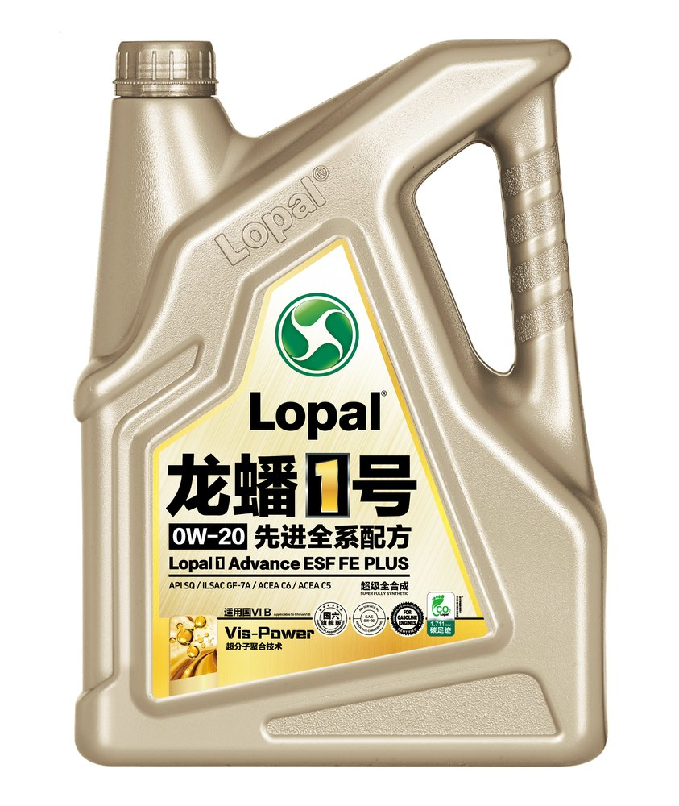

API SQ / SP
MB 229.52

Легковые автомобили
Lopal 1 Advance ESF (SAE 0W-20 / 5W-30)
API SQ
ILSAC GF-7A
ACEA C3 / C2
MB-Approval 229.52
BMW LL-04
Флагманское синтетическое моторное масло для современных высокофорсированных двигателей. Соответствует самым свежим требованиям ACEA C3-23. Защищает турбины и катализаторы от термической деградации.